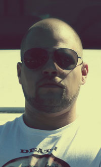

Com Truise
GHOSTLY INTERNATIONAL
http://www.comtruise.com/
Com Truise is one of the many personas of producer and designer Seth Haley, born and raised in upstate New York and operating out of a 12’-overrun apartment in Princeton, New Jersey. An admitted synth obsessive, Com Truise is the maker of an experimental and bottom heavy style he calls “mid-fi synth-wave, slow-motion funk”.
Haley’s been making music on the side for roughly a decade—going through pseudonyms like toothbrushes (Sarin Sunday, SYSTM, Airliner)—first as a DJ, and currently, as an excavator of softer, window-fogging synth-wave.
While subliminally informed by both parental record collections and hints of faded electronics product design, Haley’s Com Truise project isn’t just nostalgia capitalization. There are fragments (read: DNA strands) of Joy Division, New Order, and the Cocteau Twins, but it’s like you’re hearing them through the motherboard of a waterlogged Xbox—demented and modern. He’s got a way of making familiar things sound beautifully hand-smeared.
The first Com Truise release was the Cyanide Sisters EP—distributed for free on the AMdiscs label—where mellow stone-outs like “Sundriped” and “Slow Peels” sat next to harder IDM bangers (“BASF Ace” and “IWYWAW”) and bumpy alt-funk trips (“Norkuy” and “Komputer”). After that came a single “Pyragony/Trypyra,” and a series of eclectic podcast mixes titled “Komputer Cast.” Now comfortably situated amidst the Ghostly roster, he’s prepping his next warped pillage, and hopefully not changing that name again.